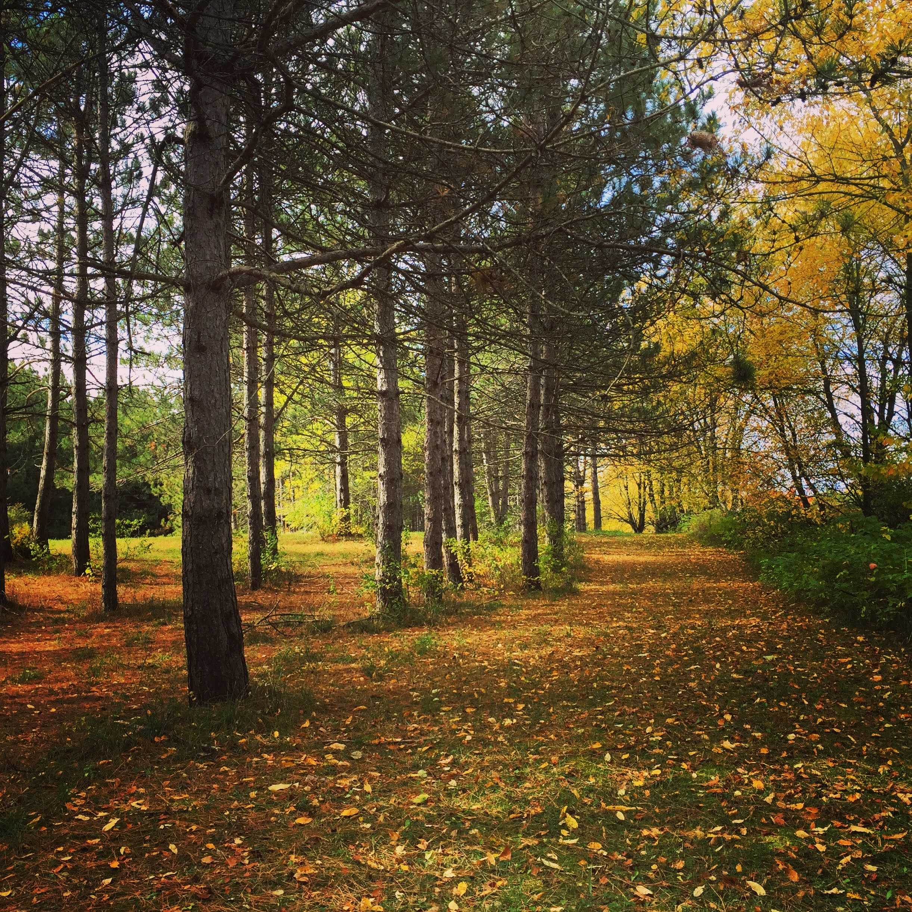

Research, strategic environmental insights, and wisdom-driven analysis to foster harmony between people, systems, and the earth.
True sustainability begins with alignment. When we listen to the fundamental cycles of the natural world, we uncover principles that apply as much to personal well-being as they do to ecological and organizational systems.
Observing natural laws, systemic patterns, and organic rhythms to solve modern complexities with ease and clarity.
Respecting the earth not merely as a resource, but as a living, interconnected ecosystem requiring mindful care.
Approaching every inquiry with active empathy, loving-kindness, and deep consideration for others and oneself.
Strategic consulting focused on spatial balance, ecological alignment, and the subtle dynamics between built environments and natural landscapes.
Synthesizing complex traditional knowledge models with modern contextual inquiries to yield actionable, holistic insights.
Translating deep, systemic observations into accessible frameworks, essays, and educational materials for sustainable living.
An ongoing research initiative exploring the interplay of elemental forces, baseline body tendencies, and systemic balance in personal and environmental health.
Periodic writings focusing on nature-centric living, environmental resonance, and practical wisdom for modern living.

With an extensive background deeply rooted in traditional Eastern vitality analysis and energy systems, my focus has always been on understanding cause, effect, and underlying balance.
Over years of study and synthesis, this foundation naturally expanded into environmental analysis, qualitative research, and systemic consulting.
I view every project—whether an essay, an environmental inquiry, or a consultation—as an opportunity to cultivate clarity, practice self-compassion, and honor our shared connection to the natural world.